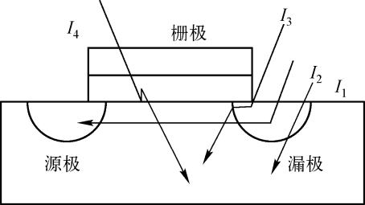

キーワード：スイッチング消費電力、内部消費電力、静的消費電力
消費電力の影響
携帯性
消費電力が低いほど、同じ電力量で電子製品の動作時間が長くなり、携帯性デバイスのバッテリー容量や体積設計の難易度も低減します。例えば、スマートフォンがますます薄くなっても性能に影響がないのは、低消費電力設計が極めて重要な役割を果たしているからです。
性能
消費電力が大きいほど、消費エネルギーが多くなり、発生する熱も多くなるため、各デバイスの動作性能に影響が出ます。例えば、スマートフォンを長時間使用すると、端末が発熱しているように感じられ、各アプリにもカクつき（ラグ）が生じることがあります。
コスト
低消費電力設計を考慮しない場合、ある機能の実現方法が煩雑になり、使用するデバイスが増えて製品面積が大きくなります。また、消費電力が大きすぎる場合は放熱装置を考慮する必要があり、これが組み立てコストをさらに増加させます。要するに、低消費電力設計には多くの利点があり、今後のデジタル設計の発展トレンドでもあります。
消費電力の種類
消費電力の種類は一般的に、動的消費電力、静的消費電力、サージ消費電力に分けられます。
動的消費電力
動的消費電力は主にスイッチング消費電力（トグル消費電力とも呼ばれる）と短絡消費電力（内部消費電力とも呼ばれる）を含みます。
1. スイッチング消費電力
CMOSデジタル回路において、負荷容量を充放電するときに消費される電力がスイッチング消費電力です。以下にCMOSインバータを示します：

Vin = 0 のとき、上のPMOSはオン、下のNMOSはオフになり、VDDが負荷容量Cloadを充電します。充電が完了すると、VoutのレベルはHighになります。
Vin = 1 のとき、上のPMOSはオフ、下のNMOSはオンになり、負荷容量はNMOSを通じて放電します。放電が完了すると、VoutのレベルはLowになります。
このようにオンとオフが切り替わる変化、すなわち電源の充放電によってスイッチング消費電力が生じます。スイッチング消費電力の計算式は以下のとおりです：

ここで、VDDは電源電圧、Cloadは後段回路の等価負荷容量、Trは入力信号のトグルレートです。
2. 短絡消費電力
信号のトグルは瞬時には完了しません。そのため、入力信号がトグルする際、PMOSとNMOSが同時にオンになる時間が必ず存在します。すると電源VDDから接地VSSまでの間に経路ができ、短絡電流が流れて短絡消費電力が発生します。下図のインバータ回路図に示すとおりです：

短絡消費電力の計算式は以下のとおりです：

ここで、Vddは電源電圧、Trはトグルレート、Qは1回のトグル過程中に電源から接地へ流れる電荷量です。
静的消費電力
CMOS回路において、静的消費電力は主に漏れ電流によって引き起こされる消費電力であり、しばしばプロセスに関係します。

漏れ電流の主な構成は、PN接合逆方向電流I1、ソースとドレイン間のサブスレッショルド漏れ電流I2、ゲート漏れ電流（ゲートとドレイン間の誘導漏れ電流I3を含む）、ゲートと基板間のトンネル漏れ電流I4です。
一般的に、漏れ電流は主にゲート漏れ電流とサブスレッショルド電流を指します。超深サブミクロンプロセスでは、トンネル漏れ電流が主要な電流の1つになります。
- 1. PN接合の両端に逆方向電圧を加えると、P領域の正孔とN領域の電子の動きは逆になり、電流は流れず、ダイオードはオフ状態になります。一部のエネルギーが大きい正孔と電子は逆方向電界の束縛を振り切って、微弱なドリフト電流を形成します。
- 2. ゲート漏れ消費電力：ゲートに信号（すなわちゲート電圧）を加えると、ゲートと基板の間に容量が存在するため、ゲートと基板の間に電流が流れ、それによって消費電力が発生します。
- 3. サブスレッショルド電流：ゲート電圧が導通しきい値より低くても、ドレインからソースへの漏れ電流が発生します。この電流をサブスレッショルド漏れ電流と呼びます。狭いトランジスタでは、ドレインとソースの距離が近い場合にサブスレッショルド漏れ電流が発生します。トランジスタが狭いほど漏れ電流は大きくなります。サブスレッショルド電流を低減するには、高しきい値のデバイスを使用したり、基板バイアスによりしきい値電圧を上げたりすることができ、これらも低消費電力設計の検討範囲に含まれます。
- 4. トンネル漏れ電流：量子力学の領域に属するため、興味がある方はご自身で調べてください。
静的消費電力の計算式は以下のとおりです：

サージ消費電力
サージ消費電力は、サージ電流によって引き起こされる消費電力です。サージ電流とは、起動時またはウェイクアップ時にデバイスを流れる最大電流を指し、そのためサージ電流は起動電流とも呼ばれます。サージ消費電力は今回の議論の対象ではありません。
消費電力モデル
library 情報
以下は、あるlibraryプロセスの最初の数行のコード記述であり、消費電力に関連するパラメータが含まれています。具体的な意味はコメントで説明されています。
例
/* library head: xxx */
technology (cmos) ;
simulation : true ;
nom_process : 1 ;
nom_temperature : -40; //デフォルト温度
nom_voltage : 0.81; //デフォルト電圧
voltage_map(VDD, 0.81); //lib内の複数の電圧を定義、以下の行を含む
voltage_map(TVDD, 0.81);
voltage_map(VDDDST, 0.81);
voltage_map(VDDGR, 0.81);
voltage_map(VDDSRC, 0.81);
voltage_map(VSS, 0);
operating_conditions("ssg0p81vm40c"){ //1つのcorner定義
process : 1; /* SSGlobalCorner_LocalMC_MOS_MOSCAP-SSGlobalCorner_LocalMC_RES_BIP_DIO_DISRES */
temperature : -40;
voltage : 0.81;
tree_type : "balanced_tree";
}
default_operating_conditions : ssg0p81vm40c ;
capacitive_load_unit (1,pf) ; //容量単位の定義
voltage_unit : "1V" ; //電圧単位の定義
current_unit : "1mA" ; //電流単位の定義
time_unit : "1ns" ; //時間単位の定義
pulling_resistance_unit : "1kohm";
define_cell_area (pad_drivers,pad_driver_sites) ;
……
cell 情報
1つのlibraryには複数の基本機能ユニットが含まれ、キーワードcellで宣言され、さまざまな消費電力情報も含まれます。
例
area : 0.392;
cell_footprint : "an2d1";
pg_pin (VDD) { //電源ピン
pg_type : primary_power;
voltage_name : VDD;
}
……
pin(A1) { //入力信号ピン
driver_waveform_fall : "tcbn22ullbwp7t40p140ssg0p81vm40c:fall";
driver_waveform_rise : "tcbn22ullbwp7t40p140ssg0p81vm40c:rise";
direction : input;
related_ground_pin : VSS; //入力ピンの接地端
related_power_pin : VDD; //入力ピン電圧
capacitance : 0.000418924 ; //入力ピン容量
……
}
pin(Z) {
direction : output;
power_down_function : "!VDD + VSS";
function : "(A1 A2)";
related_ground_pin : VSS; //出力ピンの接地端
related_power_pin : VDD; //出力ピン電圧
max_capacitance : 0.04182; //出力ピン最大容量
min_capacitance : 0.00013; //出力ピン最小容量
……
}
このとき、さらにトグルレートが分かれば、動的消費電力を計算できます。
トグルレート（Toggle rate、Tr）とは、単位時間あたりの信号（クロック、データなどの信号を含む）のトグル回数を指します。下に示すように、信号が40nsの間に4回トグルした場合、トグルレートはTr = 4/4ns = 0.1GHzとなります。

内部消費電力情報
cell定義では、内部消費電力は次のように定義されます。
例
related_pin : "A1" ;
related_pg_pin : VDD ;
rise_power(power_template_8x8) { //内部消費電力ルックアップテーブル
index_1("0.0026, 0.0101, 0.0252, 0.0553, 0.1155, 0.236, 0.4769, 0.9587");
index_2("0.00013, 0.00046, 0.00112, 0.00243, 0.00506, 0.01031, 0.02081, 0.04182");
values ( \
"0.000249215, 0.000254481, 0.000262354, 0.000261007, 0.00026381, 0.000277799, 0.000304295, 0.000345046", \
"0.000239751, 0.000248667, 0.000255454, 0.0002551, 0.000268563, 0.000275995, 0.000294669, 0.000336529", \
……
);
}
fall_power(power_template_8x8) { //内部消費電力ルックアップテーブル
index_1("0.0026, 0.0101, 0.0252, 0.0553, 0.1155, 0.236, 0.4769, 0.9587");
index_2("0.00013, 0.00046, 0.00112, 0.00243, 0.00506, 0.01031, 0.02081, 0.04182");
values ( \
"0.000577367, 0.000584652, 0.000589472, 0.000591623, 0.000592223, 0.000591943, 0.00059185, 0.000592132", \
"0.000563896, 0.000570743, 0.000576589, 0.000579818, 0.000580794, 0.00057962, 0.000579997, 0.000579136", \
"0.000550059, 0.000555794, 0.00056188, 0.000565568, 0.000567663, 0.000567231, 0.000567712, 0.00056745", \
……
);
}
}
cellの内部消費電力は、そのトランジション時間と出力容量負荷に関係します。入力トランジション時間と出力容量の大きさに基づいてプロセスライブラリのルックアップテーブルを参照し、立ち上がり消費電力と立ち下がり消費電力を取得し、次に以下の式で計算することで、総内部消費電力を求めることができます：

静的消費電力情報
cell定義では、静的消費電力（漏れ消費電力）は次のように定義されます。
例
value : 0.059561;
related_pg_pin : VDD;
}
leakage_power () {
value : 0.048082;
when : "!A1 !A2 !Z";
related_pg_pin : VDD;
}
leakage_power () {
value : 0.053318;
when : "!A1 A2 !Z";
related_pg_pin : VDD;
}
……
静的消費電力はcellの状態に関係します。つまり、入出力信号が異なる状態にあると、消費電力も異なります。状態に基づいてルックアップテーブルを参照することで、対応する静的消費電力を得ることができます。 実際に消費電力を解析する際、関連パラメータを手動で探して消費電力を計算することはなく、そうすると作業量が膨大になり見積もりが難しくなります。多くの場合、消費電力解析ツールを利用して、これらのスタンダードセルライブラリの消費電力情報を抽出し、統合して計算します。
クリックしてノートを共有
<p style="font-size:14px;">ノートはこの記事の内容を拡張したものである必要があります！</p><br> <p style="font-size:12px;"><a href="../tougao.html" target="_blank">記事投稿は、ここをクリック</a></p> <p style="font-size:14px;"><a href="./runoob-user-test-intro.html" target="_blank">登録招待コードの取得方法</a></p> <h3 class="text-muted"><i class="fa fa-info-circle" aria-hidden="true"></i> ノートを共有する前に<a href=".." class="runoob-pop">ログイン</a>が必要です！</h3> <p><a href="./runoob-user-test-intro.html" target="_blank">登録招待コードの取得方法</a></p>